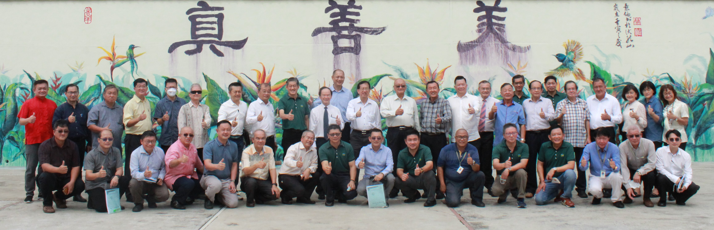
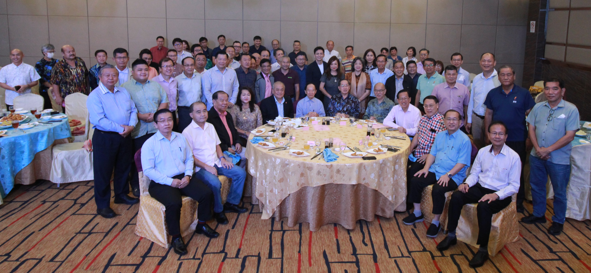

董总拜访柔佛州董教联合会和沙巴独中董总与华校
董总拜访柔佛州华校董教联合会与华校的简报
董总访问团代表与柔佛州华校董教联合会、峇株吧辖五校董事会、峇株吧辖华仁中学和峇株吧辖县发展华小工委会的代表合照。2022年9月26至9月29日，董总主席陈大锦率领中央委员和行政部同仁，拜访柔佛州华校董教联合会，华文独中、国民型中学、南方大学学院和各县发展华小工委会，共23个单位，并针对各组织、学校面对的问题，进行讨论和交流。
这项拜访促进了多方关系，也更加了解它们面对的难题，以及需关注的课题。相关课题罗列如下：
华文独中：
- 加速落实教改。
- 极力争取承认统考。
- 缺乏数理科教师。
- 开发与加强排课系统。
- 豁免缴付人力资源发展基金（HRDF）课题。
- 华裔家庭外流。
- 教师MQA认证。
- 有些独中生仍未能流利的使用马来文进行沟通。
华小：
- 微型小学合并课题。
- 半津贴华小的水电费问题。
- 华小校地和地税问题。
- 地契信托人问题。
国民型中学：
- SPM华文科艰难，导致一些华裔生不敢报考。
- 董总较关注独中。希望董总也多关心国民型中学。
民办大学学院：
- 能定期透过球类赛或交流，以促成三院校的关系。
董总访问团其他成员包括署理主席陈友信、副主席杨应俊和卢成良、秘书长庄俊隆、财政杨安山、副秘书长杨才国、中央常务委员涂兴全，中央委员吴令富、锺镇鸿、徐来兴、吴思亿和何广福，执行长梁胜义、副执行长（总务处）兼资料与档案局局主任锺伟前，以及会务与组织局局主任林纪松、执行员陈智崇和林美美。
董总的访问行程如下：
2022年9月26日
拜访单位: 柔佛州华校董教联合会、永平中学、巴株吧辖五校董事会、巴株吧辖华仁中学、巴株吧辖县发展华小工委会
2022年9月27日
拜访单位: 新文龙中华中学、笨珍培群独立中学、笨珍县发展华小工委会、古来县发展华小工委会、巴西古当县发展华小工委会、丰盛港县发展华小工委会
2022年9月28日
拜访单位: 新山宽柔中学、至达城宽柔中学分校、南方大学学院
2022年9月29日
拜访单位: 居銮中华中学、居銮县发展华小工委会、利丰港培华独立中学、利丰港培华国民型中学、麻坡中化中学、麻坡县发展华小工委会、昔加末县发展华小工委会、麻坡县校长联谊会
董总拜访柔佛州华校董教联合会与华校的简报
董总访问团代表与沙巴独中董总代表在交流晚宴上合照。2022年11月22至11月24日，董总主席陈大锦组团率领17名中央委员与8名行政部同仁，拜访沙巴州华文独立中学董事会联合总会（沙巴独中董总）、华文独中和华小，共7个单位，并针对各校面对的问题，进行讨论与交流。
沙巴独中董总特安排一场华教讲座，并邀请沙巴国民型华校董事会联合会中央委员暨华小主任陈俊豪主讲，以让访问团更了解沙巴华小和国民型中学的发展概况。
经多日的走访和交流，得知沙巴华文独中、华小和国民型中学所面对的难题或关心的课题如下：
华文独中：
- 有关近年有极少数学生未报考统考华文科事宜。
- 建议董总日后有关新编课本或新课纲的讲解会或课程教学培训，应安排在沙巴举行。
- 学生是否能透过董总线上订购书藉或课本方能进入E启学平台？
- 董总是否有意依现有的教育部方式，取消初中统一考试，而以校本评估来进行？
- 推广数码化教育，需要的是器材与人才，董总可以如何在人才方面给予沙巴独中协助？
- 州内9所独中，大部分以英文教数理科，以致各别教师自行编制课本，希望董总日后能提供相关资源。
华小：
- 共有83所华小。各校非华裔学生人数已占50%或以上。
- 非华裔过多，以致与家长开会时，会使用国语，以便非华裔家长明白。
- 教师很辛苦，因非华裔生的华文水平和掌握能力有限，成绩不好，会受到教育部的责问。
- 3所华小学生少过50人，即古达育华华小（22人）、吧巴新民华小（35人）和新都敏新文华小（44人）。
国民型中学：
- 共有8所国民型中学。各校非华裔学生人数已占50%或以上。
沙巴的华小和国民型中学的非华裔生已占据50%以上。陈俊豪表示，这也是华文教育的新契机，因华文教育开始普及化，许多非华裔家长愿意送孩子就读华小，也能促进种族之间的关系，以减少种族之间错误认知和偏见；同时，也可增强中华文化与土著文化的融合，并优化校园文化，带动国家教育发展。此外，华文教育若能得到友族社群的接受和拥护，更能稳固我国华文教育的永续发展。
董总访问团其他成员包括署理主席陈友信，副主席包章文、李添霖、卢成良和吴小铭，秘书长庄俊隆、财政杨安山、副秘书长杨才国、中央常务委员涂兴全，中央委员吴令富、锺镇鸿、潘光耀、黄水芝、陈贵源、吴思亿、黄胜全和何广福，吉打董联会理事林振明，执行长梁胜义、副执行长（总务处）兼资料与档案局局主任锺伟前、学生事务局局主任颜彣澔、秘书室主任江伟俊、会务与组织局局主任林纪松、教师教育局高级执行员谢秋嫦，以及会务与组织局高级执行员江嘉嘉和执行员陈智崇。
董总的访问行程如下：
2022年11月22日
拜访单位: 斗湖巴华中学
2022年11月23日
拜访单位: 斗湖育进公学、山打根育源独立中学
2022年11月24日
拜访单位: 山打根培正华文小学、沙巴崇正中学、亚庇建国中学、沙巴州华文独立中学董事会联合总会（沙巴独中董总）